library(tidyverse) # general usage (wrangling, plotting...)
library(phyloseq) # exploring the microbiome
library(microViz) # visualization and wrangling of phyloseq objects
library(vegan) # diversity analysis
library(lme4) # statistics
library(lmerTest) # statistics
library(pairwiseAdonis) # statistics
library(patchwork) # plotting
library(cowplot) # plotting
library(paletteer) # color palettesreadRDS("/Users/thomasamble/Downloads/Master/R_master/rds/phyloseq.rds") %>%
list2env(envir = .GlobalEnv)
set.seed(123) # setting seed for reproducibilityCalculating alpha diversity metrics Shannon diversity and observed
richness using phyloseq::estimate_richness() on the
rarefied and non-rarefied non-control phyloseq objects.
# Using phyloseq::estimate_richness() to estimate Shannon diversity and observed richness:
alpha_main <- estimate_richness(main_ps, measures = c("Shannon", "Observed")) %>%
rownames_to_column("Sample")
alpha_rarefied <- estimate_richness(rarefied_ps, measures = c("Shannon", "Observed")) %>%
rownames_to_column("Sample")
alpha_comp <- left_join(alpha_main, alpha_rarefied, by = "Sample", suffix = c("_main", "_rarefied"))Plotting alpha diversity metrics for rarefied data against
non-rarefied data and adding a 1:1 reference line for comparability.
Also testing correlation between alpha diversity metrics before and
after rarefaction, using cor.test() with Pearson’s
correlation.
# Plotting difference in Shannon diversity and Observed richness before and after rarefaction.
plot_shannon_comp <- alpha_comp %>%
ggplot(aes(x = Shannon_main,
y = Shannon_rarefied)) +
geom_point(size = 3) +
geom_abline(slope = 1, intercept = 0, linetype = "dashed", color = "red") +
theme_minimal(base_size = 9) +
theme(plot.title = element_text(hjust = 0.5, face = "bold")) +
labs(x = "Shannon (original)",
y = "Shannon (rarefied)",
title = "A) Shannon diversity\nbefore vs. after rarefaction")
plot_observed_comp <- alpha_comp %>%
ggplot(aes(x = Observed_main,
y = Observed_rarefied)) +
geom_point(size = 3) +
geom_abline(slope = 1, intercept = 0, linetype = "dashed", color = "red") +
theme_minimal(base_size = 9) +
theme(plot.title = element_text(hjust = 0.5, face = "bold")) +
labs(x = "Observed (original)",
y = "Observed (rarefied)",
title = "B) Observed richness\nbefore vs. after rarefaction")
plot_shannon_comp + plot_observed_comp +
plot_annotation(title = "Effect of rarefaction on alpha diversity",
theme = theme(plot.title = element_text(size = 14, face = "bold", hjust = 0.5))) +
plot_layout(widths = c(1, 1), guides = "collect") &
theme(aspect.ratio = 1,
axis.title = element_text(size = 12),
axis.text = element_text(size = 10))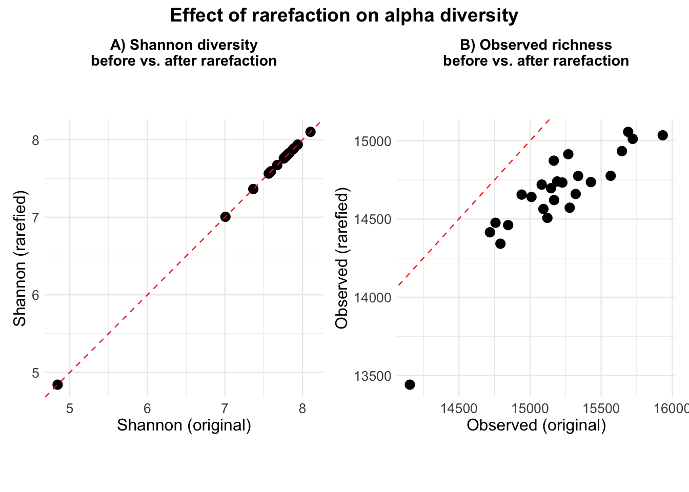
cor.test(alpha_comp$Shannon_main, alpha_comp$Shannon_rarefied)##
## Pearson's product-moment correlation
##
## data: alpha_comp$Shannon_main and alpha_comp$Shannon_rarefied
## t = 4168.4, df = 23, p-value < 0.00000000000000022
## alternative hypothesis: true correlation is not equal to 0
## 95 percent confidence interval:
## 0.9999985 0.9999997
## sample estimates:
## cor
## 0.9999993cor.test(alpha_comp$Observed_main, alpha_comp$Observed_rarefied)##
## Pearson's product-moment correlation
##
## data: alpha_comp$Observed_main and alpha_comp$Observed_rarefied
## t = 9.0959, df = 23, p-value = 0.000000004429
## alternative hypothesis: true correlation is not equal to 0
## 95 percent confidence interval:
## 0.7524404 0.9482658
## sample estimates:
## cor
## 0.8845759Creating boxplots of Shannon diversity across season, location and animal ID. Also calculating descriptive statistics mean, median and standard deviation for both Shannon diversity and observed richness across season, location and animal ID.
alpha_meta_rarefied <- alpha_rarefied %>%
mutate(Sample = str_replace_all(Sample, "\\.", "-")) %>%
left_join(sample_data(rarefied_ps) %>%
as("data.frame") %>% # forcing data frame structure, as_data_frame only prints n=6
rownames_to_column("Sample"), by = "Sample") %>%
mutate(season = factor(season, levels = c("Summer", "Autumn", "Winter")))
alpha_season <- alpha_meta_rarefied %>%
ggplot(aes(x = season, y = Shannon)) +
geom_boxplot(fill = "lightblue", outliers = F) +
geom_jitter(width = 0.1, alpha = 0.6, size = 3) +
theme_minimal() +
labs(y = "Shannon diversity", x = "Season") +
theme(axis.title = element_text(size = 13))
alpha_location <- alpha_meta_rarefied %>%
ggplot(aes(x = location, y = Shannon)) +
geom_boxplot(fill = "lightblue", outliers = F) +
geom_jitter(width = 0.1, alpha = 0.6, size = 3) +
theme_minimal() +
labs(y = "Shannon diversity", x = "Location") +
theme(axis.title = element_text(size = 13))
alpha_id <- alpha_meta_rarefied %>%
ggplot(aes(x = id_animal, y = Shannon)) +
geom_boxplot(fill = "lightblue", outliers = F) +
geom_jitter(width = 0.1, alpha = 0.6, size = 3) +
theme_minimal() +
labs(y = "Shannon diversity", x = "Animal ID") +
theme(axis.title = element_text(size = 13))
alpha_season + alpha_location + alpha_id +
plot_layout(axes = "collect", widths = c(1, 1, 1.75)) +
plot_annotation(title = "Shannon diversity across season, location and animal id",
tag_levels = c("A", "B", "C"),
theme = theme(plot.title.position = "plot",
plot.title = element_text(, size = 16, hjust = 0.5))) &
theme(plot.tag = element_text(face = "bold", size = 15),
panel.border = element_rect(colour = "black", fill = NA, linewidth = 0.6))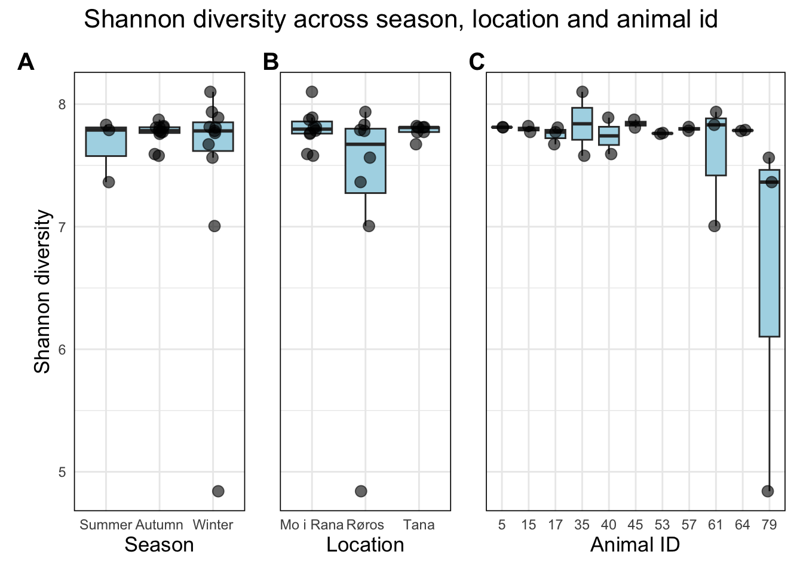
alpha_meta_rarefied %>%
group_by(season) %>%
summarise(mean_Shannon = mean(Shannon), mean_Observed = mean(Observed), median_Shannon = median(Shannon),
median_Observed = median(Observed), sd_Shannon = sd(Shannon), sd_Observed = sd(Observed))## # A tibble: 3 × 7
## season mean_Shannon mean_Observed median_Shannon median_Observed sd_Shannon sd_Observed
## <fct> <dbl> <dbl> <dbl> <dbl> <dbl> <dbl>
## 1 Summer 7.66 14894 7.79 14934 0.258 142.
## 2 Autumn 7.76 14739. 7.78 14720 0.0927 165.
## 3 Winter 7.47 14505. 7.78 14564 0.916 401.alpha_meta_rarefied %>%
group_by(location) %>%
summarise(mean_Shannon = mean(Shannon), mean_Observed = mean(Observed), median_Shannon = median(Shannon),
median_Observed = median(Observed), sd_Shannon = sd(Shannon), sd_Observed = sd(Observed))## # A tibble: 3 × 7
## location mean_Shannon mean_Observed median_Shannon median_Observed sd_Shannon sd_Observed
## <fct> <dbl> <dbl> <dbl> <dbl> <dbl> <dbl>
## 1 Mo i Rana 7.80 14749. 7.80 14715 0.149 195.
## 2 Røros 7.26 14528. 7.67 14650 1.02 498.
## 3 Tana 7.78 14665. 7.81 14660 0.0520 144.alpha_meta_rarefied %>%
group_by(id_animal) %>%
summarise(mean_Shannon = mean(Shannon), mean_Observed = mean(Observed), median_Shannon = median(Shannon),
median_Observed = median(Observed), sd_Shannon = sd(Shannon), sd_Observed = sd(Observed))## # A tibble: 11 × 7
## id_animal mean_Shannon mean_Observed median_Shannon median_Observed sd_Shannon sd_Observed
## <fct> <dbl> <dbl> <dbl> <dbl> <dbl> <dbl>
## 1 5 7.81 14824 7.81 14824 0.00132 69.3
## 2 15 7.80 14690 7.80 14690 0.0342 42.4
## 3 17 7.75 14541. 7.77 14507 0.0707 102.
## 4 35 7.84 15046 7.84 15046 0.369 15.6
## 5 40 7.74 14736. 7.74 14736. 0.210 4.95
## 6 45 7.84 14778. 7.84 14778. 0.0455 193.
## 7 53 7.76 14586. 7.76 14586. 0.00496 156.
## 8 57 7.80 14596. 7.80 14596. 0.0217 34.6
## 9 61 7.59 14590. 7.83 14415 0.510 368.
## 10 64 7.79 14749 7.79 14749 0.00518 262.
## 11 79 6.59 14318. 7.36 14736 1.52 759.Fitting separate linear models with Shannon diversity and observed richness as response variables, with season and location as fixed effects. Also fitting similar models with the exclusion of sample WKR24-79, which revealed substantially lower Shannon diversity and observed richness. Performing analysis of variance (ANOVA) on all four models for testing of overall effect of fixed effects, and summary for pairwise testing. Plotting residuals vs fitted and Q-Q residuals for model diagnostics.
lm_Shannon <- lm(Shannon ~ season + location, data = alpha_meta_rarefied)
anova(lm_Shannon)## Analysis of Variance Table
##
## Response: Shannon
## Df Sum Sq Mean Sq F value Pr(>F)
## season 2 0.4725 0.23625 0.6963 0.51010
## location 2 1.8172 0.90861 2.6780 0.09322 .
## Residuals 20 6.7858 0.33929
## ---
## Signif. codes: 0 '***' 0.001 '**' 0.01 '*' 0.05 '.' 0.1 ' ' 1summary(lm_Shannon)##
## Call:
## lm(formula = Shannon ~ season + location, data = alpha_meta_rarefied)
##
## Residuals:
## Min 1Q Median 3Q Max
## -2.18423 -0.03046 0.02978 0.11939 0.91091
##
## Coefficients:
## Estimate Std. Error t value Pr(>|t|)
## (Intercept) 8.47471 0.49005 17.293 0.00000000000017 ***
## seasonAutumn -0.72115 0.53106 -1.358 0.1896
## seasonWinter -0.63569 0.42539 -1.494 0.1507
## locationRøros -0.81346 0.35645 -2.282 0.0336 *
## locationTana 0.01575 0.30869 0.051 0.9598
## ---
## Signif. codes: 0 '***' 0.001 '**' 0.01 '*' 0.05 '.' 0.1 ' ' 1
##
## Residual standard error: 0.5825 on 20 degrees of freedom
## Multiple R-squared: 0.2523, Adjusted R-squared: 0.1028
## F-statistic: 1.687 on 4 and 20 DF, p-value: 0.1924plot(lm_Shannon, which = c(1:2))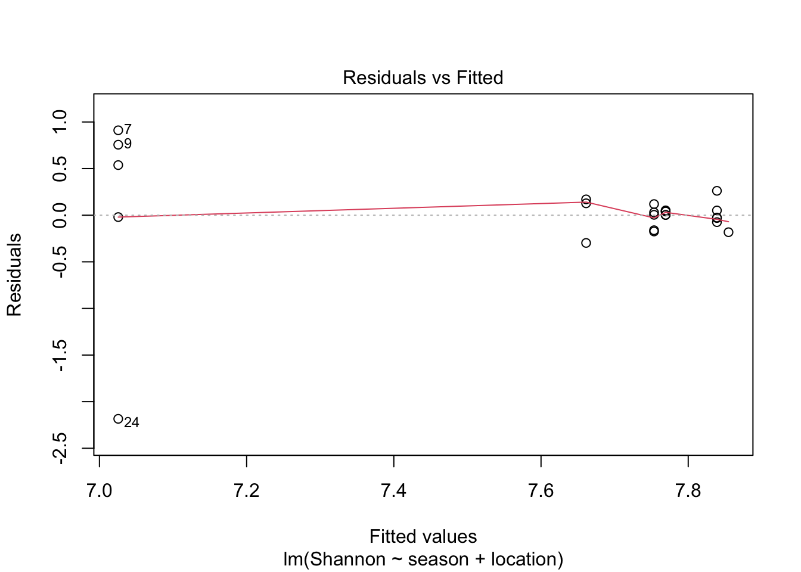
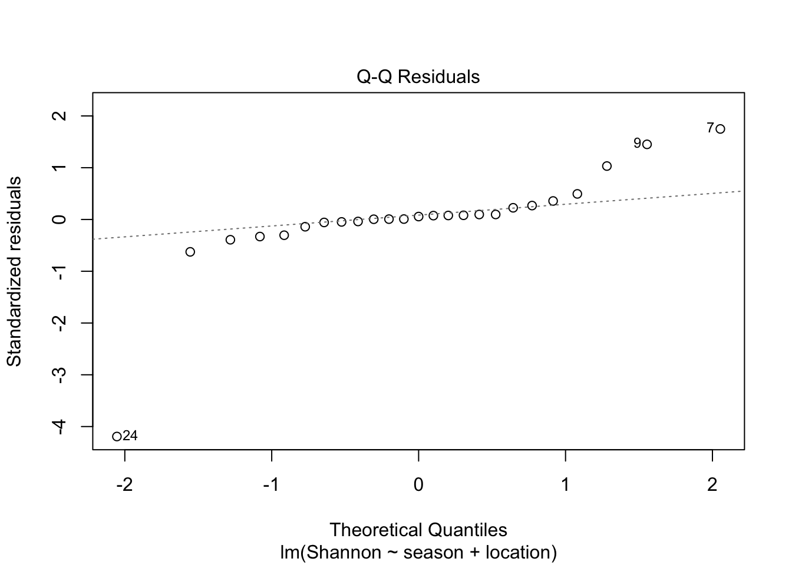
lm_Observed <- lm(Observed ~ season + location, data = alpha_meta_rarefied)
anova(lm_Observed)## Analysis of Variance Table
##
## Response: Observed
## Df Sum Sq Mean Sq F value Pr(>F)
## season 2 496998 248499 3.2938 0.05801 .
## location 2 412413 206206 2.7333 0.08925 .
## Residuals 20 1508871 75444
## ---
## Signif. codes: 0 '***' 0.001 '**' 0.01 '*' 0.05 '.' 0.1 ' ' 1summary(lm_Observed)##
## Call:
## lm(formula = Observed ~ season + location, data = alpha_meta_rarefied)
##
## Residuals:
## Min 1Q Median 3Q Max
## -866.60 -68.83 34.40 107.40 468.40
##
## Coefficients:
## Estimate Std. Error t value Pr(>|t|)
## (Intercept) 15276.2 231.1 66.107 <0.0000000000000002 ***
## seasonAutumn -468.9 250.4 -1.872 0.0759 .
## seasonWinter -586.4 200.6 -2.923 0.0084 **
## locationRøros -382.2 168.1 -2.274 0.0341 *
## locationTana -126.0 145.6 -0.866 0.3970
## ---
## Signif. codes: 0 '***' 0.001 '**' 0.01 '*' 0.05 '.' 0.1 ' ' 1
##
## Residual standard error: 274.7 on 20 degrees of freedom
## Multiple R-squared: 0.3761, Adjusted R-squared: 0.2513
## F-statistic: 3.014 on 4 and 20 DF, p-value: 0.04257plot(lm_Observed, which = c(1:2))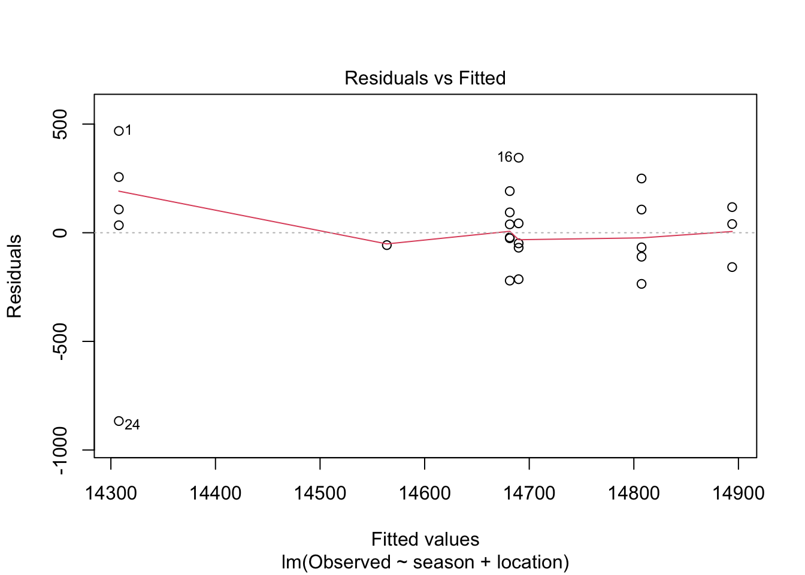
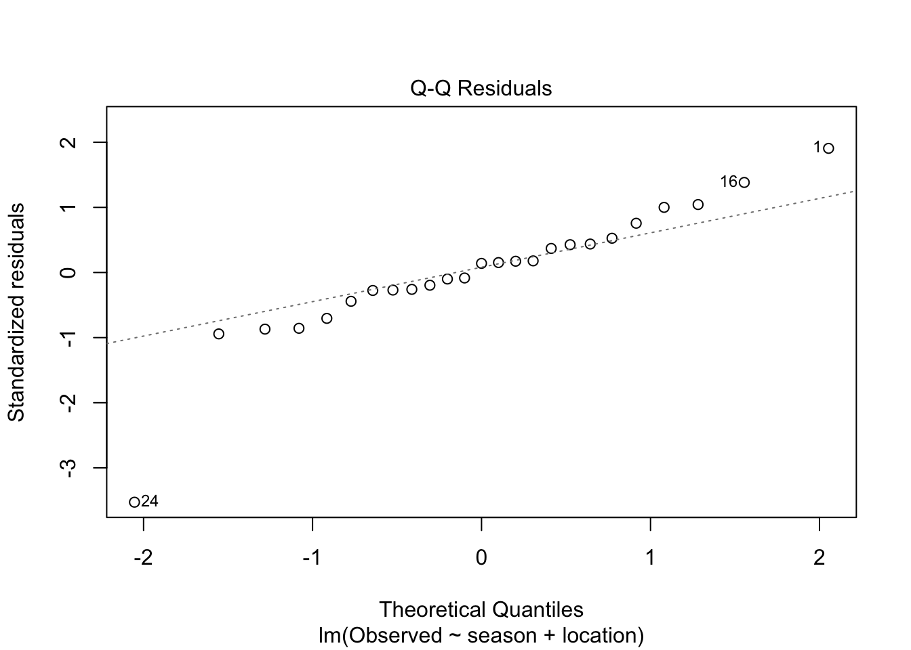
lm_Shannon_rf <- lm(Shannon ~ season + location, data = alpha_meta_rarefied %>%
filter(Sample != "WKR24-79"))
anova(lm_Shannon_rf)## Analysis of Variance Table
##
## Response: Shannon
## Df Sum Sq Mean Sq F value Pr(>F)
## season 2 0.02427 0.012137 0.2804 0.7585
## location 2 0.17587 0.087937 2.0319 0.1586
## Residuals 19 0.82229 0.043278summary(lm_Shannon_rf)##
## Call:
## lm(formula = Shannon ~ season + location, data = alpha_meta_rarefied %>%
## filter(Sample != "WKR24-79"))
##
## Residuals:
## Min 1Q Median 3Q Max
## -0.56627 -0.04142 0.01696 0.06877 0.36486
##
## Coefficients:
## Estimate Std. Error t value Pr(>|t|)
## (Intercept) 7.92866 0.18110 43.781 <0.0000000000000002 ***
## seasonAutumn -0.17509 0.19529 -0.897 0.3812
## seasonWinter -0.08964 0.15889 -0.564 0.5793
## locationRøros -0.26740 0.13554 -1.973 0.0632 .
## locationTana 0.01575 0.11025 0.143 0.8879
## ---
## Signif. codes: 0 '***' 0.001 '**' 0.01 '*' 0.05 '.' 0.1 ' ' 1
##
## Residual standard error: 0.208 on 19 degrees of freedom
## Multiple R-squared: 0.1958, Adjusted R-squared: 0.02644
## F-statistic: 1.156 on 4 and 19 DF, p-value: 0.361lm_Observed_rf <- lm(Observed ~ season + location, data = alpha_meta_rarefied %>%
filter(Sample != "WKR24-79"))
anova(lm_Observed_rf)## Analysis of Variance Table
##
## Response: Observed
## Df Sum Sq Mean Sq F value Pr(>F)
## season 2 207968 103984 3.4654 0.05211 .
## location 2 106702 53351 1.7780 0.19596
## Residuals 19 570126 30007
## ---
## Signif. codes: 0 '***' 0.001 '**' 0.01 '*' 0.05 '.' 0.1 ' ' 1summary(lm_Observed_rf)##
## Call:
## lm(formula = Observed ~ season + location, data = alpha_meta_rarefied %>%
## filter(Sample != "WKR24-79"))
##
## Residuals:
## Min 1Q Median 3Q Max
## -235.37 -109.53 -23.36 96.89 345.17
##
## Coefficients:
## Estimate Std. Error t value Pr(>|t|)
## (Intercept) 15059.6 150.8 99.868 <0.0000000000000002 ***
## seasonAutumn -252.2 162.6 -1.551 0.1374
## seasonWinter -369.8 132.3 -2.795 0.0116 *
## locationRøros -165.6 112.9 -1.467 0.1587
## locationTana -126.0 91.8 -1.373 0.1859
## ---
## Signif. codes: 0 '***' 0.001 '**' 0.01 '*' 0.05 '.' 0.1 ' ' 1
##
## Residual standard error: 173.2 on 19 degrees of freedom
## Multiple R-squared: 0.3556, Adjusted R-squared: 0.22
## F-statistic: 2.622 on 4 and 19 DF, p-value: 0.0673Also fitting linear mixed effect models, with the same model, now including animal ID as a random effect to account for repeated sampling.
# Samples are repeated measures on animals, thus creating a model treating id_animal as a random effect
lmm_Shannon <- lmer(Shannon ~ season + location + (1 | id_animal), data = alpha_meta_rarefied)
summary(lmm_Shannon)## Linear mixed model fit by REML. t-tests use Satterthwaite's method ['lmerModLmerTest']
## Formula: Shannon ~ season + location + (1 | id_animal)
## Data: alpha_meta_rarefied
##
## REML criterion at convergence: 43.3
##
## Scaled residuals:
## Min 1Q Median 3Q Max
## -3.7498 -0.0523 0.0511 0.2050 1.5638
##
## Random effects:
## Groups Name Variance Std.Dev.
## id_animal (Intercept) 0.0000 0.0000
## Residual 0.3393 0.5825
## Number of obs: 25, groups: id_animal, 11
##
## Fixed effects:
## Estimate Std. Error df t value Pr(>|t|)
## (Intercept) 8.47471 0.49005 20.00000 17.293 0.00000000000017 ***
## seasonAutumn -0.72115 0.53106 20.00000 -1.358 0.1896
## seasonWinter -0.63569 0.42539 20.00000 -1.494 0.1507
## locationRøros -0.81346 0.35645 20.00000 -2.282 0.0336 *
## locationTana 0.01575 0.30869 20.00000 0.051 0.9598
## ---
## Signif. codes: 0 '***' 0.001 '**' 0.01 '*' 0.05 '.' 0.1 ' ' 1##
## Correlation of Fixed Effects:## (Intr) ssnAtm ssnWnt lctnRr
## seasonAutmn -0.890
## seasonWintr -0.868 0.801
## locationRrs -0.727 0.625 0.448
## locationTan -0.105 -0.220 0.000 0.144
## optimizer (nloptwrap) convergence code: 0 (OK)
## boundary (singular) fit: see help('isSingular')anova(lmm_Shannon)## Type III Analysis of Variance Table with Satterthwaite's method
## Sum Sq Mean Sq NumDF DenDF F value Pr(>F)
## season 0.78221 0.39111 2 20 1.1527 0.33589
## location 1.81722 0.90861 2 20 2.6780 0.09322 .
## ---
## Signif. codes: 0 '***' 0.001 '**' 0.01 '*' 0.05 '.' 0.1 ' ' 1lmm_Observed <- lmer(Observed ~ season + location + (1 | id_animal), data = alpha_meta_rarefied)
summary(lmm_Observed)## Linear mixed model fit by REML. t-tests use Satterthwaite's method ['lmerModLmerTest']
## Formula: Observed ~ season + location + (1 | id_animal)
## Data: alpha_meta_rarefied
##
## REML criterion at convergence: 289.5
##
## Scaled residuals:
## Min 1Q Median 3Q Max
## -3.1551 -0.2506 0.1252 0.3910 1.7053
##
## Random effects:
## Groups Name Variance Std.Dev.
## id_animal (Intercept) 0 0.0
## Residual 75444 274.7
## Number of obs: 25, groups: id_animal, 11
##
## Fixed effects:
## Estimate Std. Error df t value Pr(>|t|)
## (Intercept) 15276.2 231.1 20.0 66.107 <0.0000000000000002 ***
## seasonAutumn -468.9 250.4 20.0 -1.872 0.0759 .
## seasonWinter -586.4 200.6 20.0 -2.923 0.0084 **
## locationRøros -382.2 168.1 20.0 -2.274 0.0341 *
## locationTana -126.0 145.6 20.0 -0.866 0.3970
## ---
## Signif. codes: 0 '***' 0.001 '**' 0.01 '*' 0.05 '.' 0.1 ' ' 1##
## Correlation of Fixed Effects:## (Intr) ssnAtm ssnWnt lctnRr
## seasonAutmn -0.890
## seasonWintr -0.868 0.801
## locationRrs -0.727 0.625 0.448
## locationTan -0.105 -0.220 0.000 0.144
## optimizer (nloptwrap) convergence code: 0 (OK)
## boundary (singular) fit: see help('isSingular')anova(lmm_Observed)## Type III Analysis of Variance Table with Satterthwaite's method
## Sum Sq Mean Sq NumDF DenDF F value Pr(>F)
## season 691122 345561 2 20 4.5804 0.02303 *
## location 412413 206206 2 20 2.7333 0.08925 .
## ---
## Signif. codes: 0 '***' 0.001 '**' 0.01 '*' 0.05 '.' 0.1 ' ' 1# Model diagnostics:
## residuals vs fitted (lmm_Shannon):
plot(lmm_Shannon, col = lmm_Shannon@frame$location)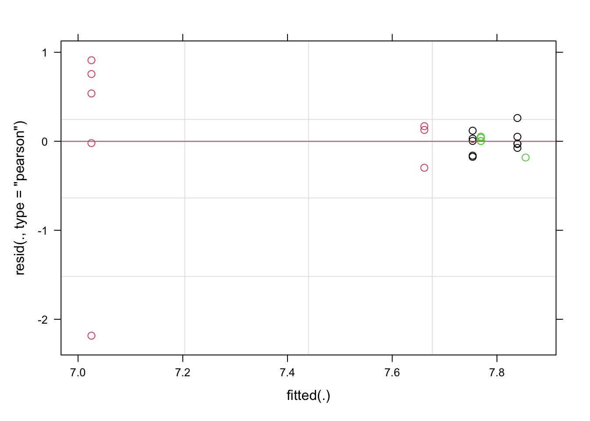
### roughly centered around 0, one at -2, no strong evidence for homoscedasticity
## Q-Q plot (lmm_Shannon):
qqnorm(resid(lmm_Shannon)); qqline(resid(lmm_Shannon))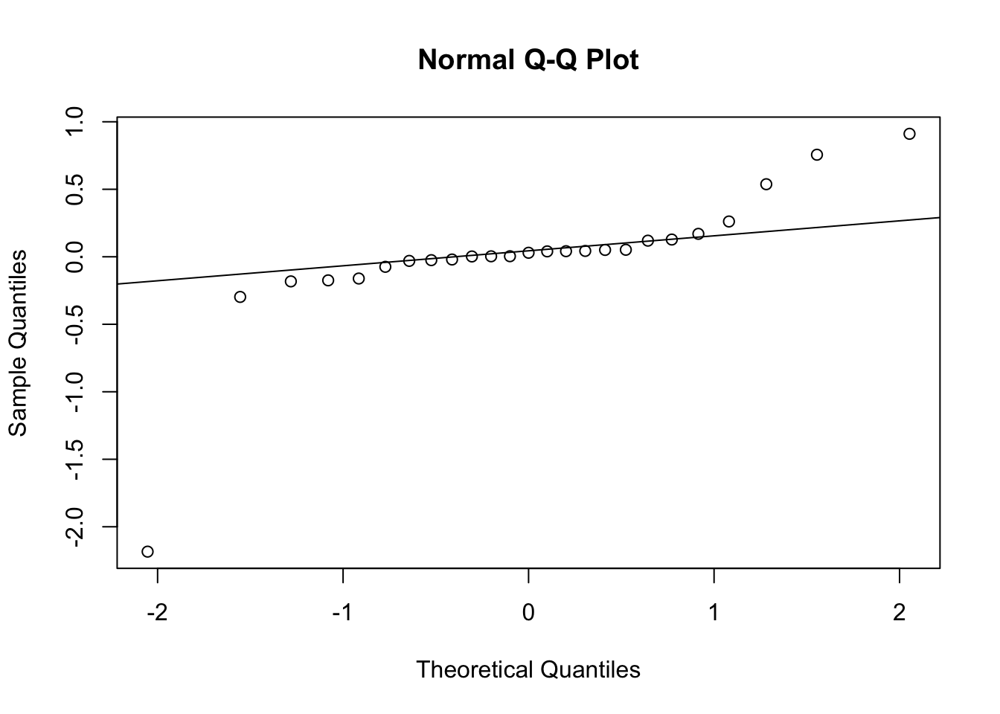
### residuals are mostly normally distributed, with one outlier
## residuals vs fitted (lmm_Observed):
plot(lmm_Observed, col = lmm_Observed@frame$location)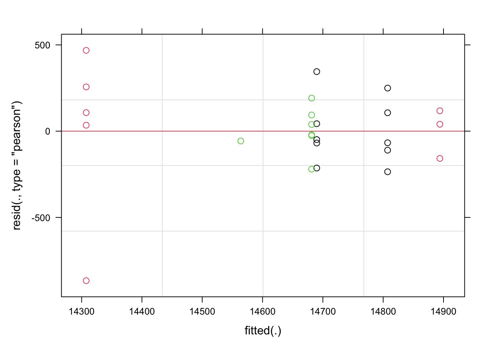
## Q-Q plot (lmm_Observed):
qqnorm(resid(lmm_Observed)); qqline(resid(lmm_Observed))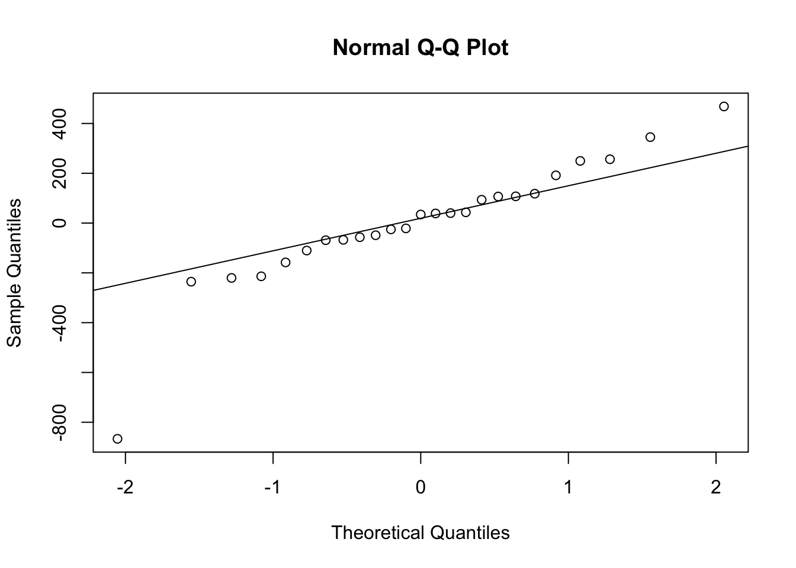
# re-fitted:
lmm_Shannon_rf <- lmer(Shannon ~ season + location + (1 | id_animal), data = alpha_meta_rarefied %>% filter(Sample != "WKR24-79"))
summary(lmm_Shannon_rf)## Linear mixed model fit by REML. t-tests use Satterthwaite's method ['lmerModLmerTest']
## Formula: Shannon ~ season + location + (1 | id_animal)
## Data: alpha_meta_rarefied %>% filter(Sample != "WKR24-79")
##
## REML criterion at convergence: 2.2
##
## Scaled residuals:
## Min 1Q Median 3Q Max
## -2.72201 -0.19912 0.08151 0.33055 1.75383
##
## Random effects:
## Groups Name Variance Std.Dev.
## id_animal (Intercept) 0.00000 0.000
## Residual 0.04328 0.208
## Number of obs: 24, groups: id_animal, 11
##
## Fixed effects:
## Estimate Std. Error df t value Pr(>|t|)
## (Intercept) 7.92866 0.18110 19.00000 43.781 <0.0000000000000002 ***
## seasonAutumn -0.17509 0.19529 19.00000 -0.897 0.3812
## seasonWinter -0.08964 0.15889 19.00000 -0.564 0.5793
## locationRøros -0.26740 0.13554 19.00000 -1.973 0.0632 .
## locationTana 0.01575 0.11025 19.00000 0.143 0.8879
## ---
## Signif. codes: 0 '***' 0.001 '**' 0.01 '*' 0.05 '.' 0.1 ' ' 1##
## Correlation of Fixed Effects:## (Intr) ssnAtm ssnWnt lctnRr
## seasonAutmn -0.896
## seasonWintr -0.877 0.814
## locationRrs -0.748 0.652 0.502
## locationTan -0.101 -0.214 0.000 0.136
## optimizer (nloptwrap) convergence code: 0 (OK)
## boundary (singular) fit: see help('isSingular')anova(lmm_Shannon_rf)## Type III Analysis of Variance Table with Satterthwaite's method
## Sum Sq Mean Sq NumDF DenDF F value Pr(>F)
## season 0.03829 0.019145 2 19 0.4424 0.6490
## location 0.17588 0.087937 2 19 2.0319 0.1586lmm_Observed_rf <- lmer(Observed ~ season + location + (1 | id_animal), data = alpha_meta_rarefied %>% filter(Sample != "WKR24-79"))
summary(lmm_Observed_rf)## Linear mixed model fit by REML. t-tests use Satterthwaite's method ['lmerModLmerTest']
## Formula: Observed ~ season + location + (1 | id_animal)
## Data: alpha_meta_rarefied %>% filter(Sample != "WKR24-79")
##
## REML criterion at convergence: 255.8
##
## Scaled residuals:
## Min 1Q Median 3Q Max
## -1.35136 -0.56082 0.05047 0.40898 1.59941
##
## Random effects:
## Groups Name Variance Std.Dev.
## id_animal (Intercept) 13348 115.5
## Residual 18241 135.1
## Number of obs: 24, groups: id_animal, 11
##
## Fixed effects:
## Estimate Std. Error df t value Pr(>|t|)
## (Intercept) 15058.551 129.389 17.378 116.382 < 0.0000000000000002 ***
## seasonAutumn -261.371 128.374 11.231 -2.036 0.06604 .
## seasonWinter -358.532 104.102 11.143 -3.444 0.00539 **
## locationRøros -164.551 122.925 12.185 -1.339 0.20513
## locationTana -107.331 111.434 8.683 -0.963 0.36151
## ---
## Signif. codes: 0 '***' 0.001 '**' 0.01 '*' 0.05 '.' 0.1 ' ' 1##
## Correlation of Fixed Effects:## (Intr) ssnAtm ssnWnt lctnRr
## seasonAutmn -0.822
## seasonWintr -0.805 0.811
## locationRrs -0.670 0.480 0.372
## locationTan -0.238 -0.149 0.000 0.250anova(lmm_Observed_rf)## Type III Analysis of Variance Table with Satterthwaite's method
## Sum Sq Mean Sq NumDF DenDF F value Pr(>F)
## season 246885 123443 2 11.271 6.7672 0.01173 *
## location 40368 20184 2 10.704 1.1065 0.36576
## ---
## Signif. codes: 0 '***' 0.001 '**' 0.01 '*' 0.05 '.' 0.1 ' ' 1Aggregating the rarefied phyloseq object to species taxonomic rank,
and creating a distance matrix with Bray-Curtis distances using
microViz::dist_calc() and calculating non-metric
multidimensional scaling ordinance using
microViz::ord_calc(). Then plotting the NMDS ordinance
using microViz::ord_plot() with 95% confidence ellipses,
with points and ellipses colored after season, location and animal
ID.
# Creating ordinance object for rarefied phyloseq-object
rarefied_nmds <- rarefied_ps %>%
tax_agg(rank = "species") %>%
dist_calc("bray") %>%
ord_calc("NMDS")## Run 0 stress 0.07833142
## Run 1 stress 0.07807193
## ... New best solution
## ... Procrustes: rmse 0.01612287 max resid 0.06637738
## Run 2 stress 0.06944521
## ... New best solution
## ... Procrustes: rmse 0.07487073 max resid 0.1900055
## Run 3 stress 0.06944504
## ... New best solution
## ... Procrustes: rmse 0.00007050603 max resid 0.0002219135
## ... Similar to previous best
## Run 4 stress 0.07303942
## Run 5 stress 0.07882163
## Run 6 stress 0.06944551
## ... Procrustes: rmse 0.0001635046 max resid 0.0005144987
## ... Similar to previous best
## Run 7 stress 0.0670238
## ... New best solution
## ... Procrustes: rmse 0.01831217 max resid 0.07649047
## Run 8 stress 0.06944513
## Run 9 stress 0.07292767
## Run 10 stress 0.06702419
## ... Procrustes: rmse 0.0001866957 max resid 0.0005869924
## ... Similar to previous best
## Run 11 stress 0.08562196
## Run 12 stress 0.06584194
## ... New best solution
## ... Procrustes: rmse 0.02058552 max resid 0.08434789
## Run 13 stress 0.07292743
## Run 14 stress 0.07303942
## Run 15 stress 0.07833118
## Run 16 stress 0.06584178
## ... New best solution
## ... Procrustes: rmse 0.001191469 max resid 0.003816718
## ... Similar to previous best
## Run 17 stress 0.06944479
## Run 18 stress 0.078072
## Run 19 stress 0.07833109
## Run 20 stress 0.07303938
## *** Best solution repeated 1 timesxlims <- c(-1.35, 0.75)
ylims <- c(-0.6, 0.6)
rarefied_nmds@ord # finds the stress-value##
## Call:
## metaMDS(comm = ps.dist)
##
## global Multidimensional Scaling using monoMDS
##
## Data: ps.dist
## Distance: bray
##
## Dimensions: 2
## Stress: 0.06584178
## Stress type 1, weak ties
## Best solution was repeated 1 time in 20 tries
## The best solution was from try 16 (random start)
## Scaling: centring, PC rotation, halfchange scaling
## Species: scores missingb_season <- rarefied_nmds %>%
ord_plot(colour = "season", size = 3) +
stat_ellipse(aes(group = season, fill = season, color = season),
type = "t", level = 0.95, geom = "polygon", alpha = 0.2) +
scale_colour_paletteer_d("ltc::trio4") +
scale_fill_paletteer_d("ltc::trio4") +
theme_minimal() +
theme(legend.position = "right",
aspect.ratio = 1) +
labs(title = "A) Season",
caption = NULL,
colour = "Season", fill = "Season") +
coord_cartesian(xlim = xlims, ylim = ylims)
b_location <- rarefied_nmds %>%
ord_plot(colour = "location", size = 3) +
stat_ellipse(aes(group = location, fill = location, color = location),
type = "t", level = 0.95, geom = "polygon", alpha = 0.2) +
scale_colour_paletteer_d("ltc::trio1") +
scale_fill_paletteer_d("ltc::trio1") +
theme_minimal() +
theme(legend.position = "right",
aspect.ratio = 1) +
labs(title = "B) Location",
caption = NULL,
colour = "Location", fill = "Location") +
coord_cartesian(xlim = xlims, ylim = ylims)
b_id <- rarefied_nmds %>%
ord_plot(colour = "id_animal", size = 3) +
scale_colour_paletteer_d("MoMAColors::Klein") +
theme_minimal()+
theme(legend.position = "right",
aspect.ratio = 1) +
labs(title = "C) Animal ID",
caption = NULL,
colour = "Animal ID", fill = "Animal ID") +
coord_cartesian(xlim = xlims, ylim = ylims) +
guides(colour = guide_legend(ncol = 2))
b_season + b_location + b_id +
plot_layout(ncol = 1)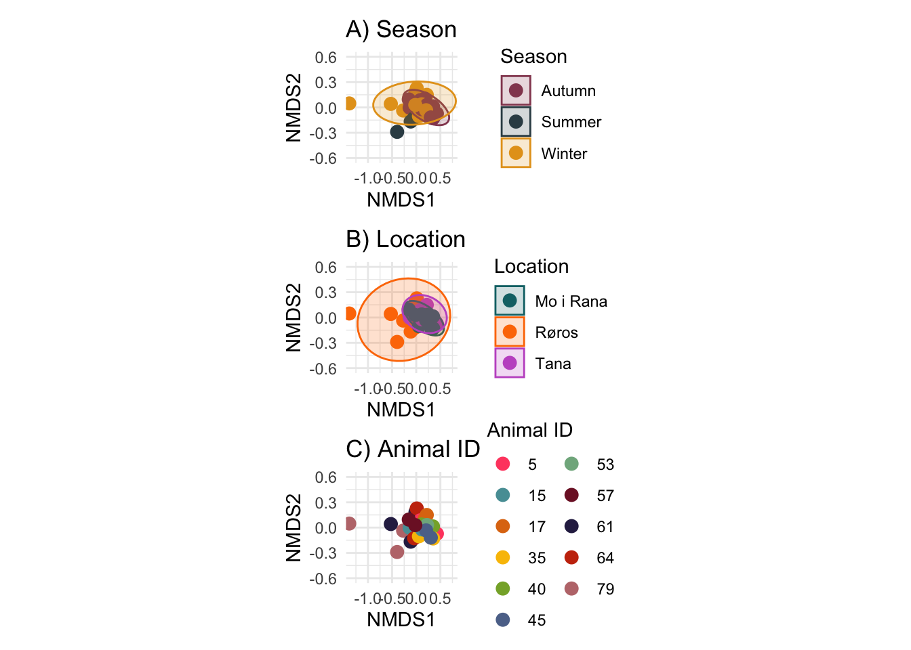
ggsave(
"nmds.png",
width = 7,
height = 10,
dpi = 300
)
#legend_box <- theme(legend.position = "right",
#legend.background = element_rect(fill = "white", colour = "grey40"),
#legend.box.background = element_rect(fill = "white", colour = "grey40"),
#legend.key = element_rect(),
#legend.title = element_text(size = 11, margin = margin(b = 4)),
#legend.text = element_text(size = 10))
#leg_season <- get_legend(b_season + legend_box)
#leg_location <- get_legend(b_location + legend_box)
#leg_id <- get_legend(b_id + legend_box + guides(colour = guide_legend(ncol = 2)))
#b_legend <- plot_grid(ggdraw() +
#draw_label(paste0("NMDS stress = 0.0658"), x = 0.25, y = 0.7, hjust = 0, size = 13),
#plot_grid(leg_season, leg_location, leg_id, nrow = 1),
#ncol = 1)
#(b_season | b_location) /
#(b_id | b_legend)Performing permutational multivariate analysis of variance
(PERMANOVA) on Bray-Curtis distance matrices using
microViz::dist_permanova() (a wrapper around
vegan::adonis2()) at species-level with 99999 permutations.
First using only season as explanatory variable, and then using an
interaction term with season and location. Acquiring model results using
microViz::perm_get() for both models. Estimating beta
dispersion using vegan::betadisper().
Additionally performing pariwise PERMANOVA using
pairwiseAdonis::pairwise.adonis2() with season as the
explanatory variable. Also doing this with location as explanatory
variable, but only as an exploratory analysis due to the partial
confounding of location.
# Creating distance matrix with Bray-Curtis dissimilarity as done previously, and running a PERMANOVA with dist_permanova
## Can not include id_animal as a fixed effects, and dist_permanova does not accept random effects. Ends up eating up all the degrees of freedom
## PERMANOVA assumes independence, which is not the case for my explanatory variables, thus only running on season (the least confounded variable)
res <- rarefied_ps %>%
tax_agg(rank = "species") %>%
dist_calc("bray") %>%
dist_permanova(variables = "season",
n_perms = 99999)
res2 <- rarefied_ps %>%
tax_agg(rank = "species") %>%
dist_calc("bray") %>%
dist_permanova(variables = c("season", "location"),
interactions = "season * location",
n_perms = 99999)
perm_get(res) # significant effect of season## Permutation test for adonis under reduced model
## Marginal effects of terms
## Permutation: free
## Number of permutations: 99999
##
## vegan::adonis2(formula = formula, data = metadata, permutations = n_perms, by = by, parallel = parall)
## Df SumOfSqs R2 F Pr(>F)
## season 2 0.28968 0.20504 2.8372 0.02151 *
## Residual 22 1.12312 0.79496
## Total 24 1.41279 1.00000
## ---
## Signif. codes: 0 '***' 0.001 '**' 0.01 '*' 0.05 '.' 0.1 ' ' 1perm_get(res2) # no significant evidence for interaction between season and location## Permutation test for adonis under reduced model
## Marginal effects of terms
## Permutation: free
## Number of permutations: 99999
##
## vegan::adonis2(formula = formula, data = metadata, permutations = n_perms, by = by, parallel = parall)
## Df SumOfSqs R2 F Pr(>F)
## season:location 1 0.01891 0.01339 0.4309 0.7685
## Residual 19 0.83386 0.59022
## Total 24 1.41279 1.00000# Beta dispersion
bray_mat <- rarefied_ps %>%
tax_agg(rank = "species") %>%
dist_calc("bray") %>%
dist_get()
beta_dispersion <- betadisper(bray_mat, metadata %>% slice(1:25) %>% pull(season)) # using slice to exclude control samples
beta_dispersion %>% anova() # no significant beta dispersion## Analysis of Variance Table
##
## Response: Distances
## Df Sum Sq Mean Sq F value Pr(>F)
## Groups 2 0.037519 0.018759 1.312 0.2895
## Residuals 22 0.314555 0.014298# Pairwise adonis2
pairwise.adonis2(bray_mat ~ season, data = metadata[1:25,], nperm = 99999)## $parent_call
## [1] "bray_mat ~ season , strata = Null , permutations 99999"
##
## $Winter_vs_Summer
## Df SumOfSqs R2 F Pr(>F)
## Model 1 0.05876 0.0608 0.7768 0.471
## Residual 12 0.90771 0.9392
## Total 13 0.96647 1.0000
##
## $Winter_vs_Autumn
## Df SumOfSqs R2 F Pr(>F)
## Model 1 0.10055 0.0768 1.6637 0.142
## Residual 20 1.20879 0.9232
## Total 21 1.30934 1.0000
##
## $Summer_vs_Autumn
## Df SumOfSqs R2 F Pr(>F)
## Model 1 0.02563 0.05532 0.7028 0.663
## Residual 12 0.43760 0.94468
## Total 13 0.46323 1.00000
##
## attr(,"class")
## [1] "pwadstrata" "list"pairwise.adonis2(bray_mat ~ location, data = metadata[1:25,], nperm = 99999)## $parent_call
## [1] "bray_mat ~ location , strata = Null , permutations 99999"
##
## $`Tana_vs_Mo i Rana`
## Df SumOfSqs R2 F Pr(>F)
## Model 1 0.04847 0.08003 1.305 0.22
## Residual 15 0.55715 0.91997
## Total 16 0.60562 1.00000
##
## $Tana_vs_Røros
## Df SumOfSqs R2 F Pr(>F)
## Model 1 0.03878 0.03732 0.504 0.762
## Residual 13 1.00031 0.96268
## Total 14 1.03909 1.00000
##
## $`Mo i Rana_vs_Røros`
## Df SumOfSqs R2 F Pr(>F)
## Model 1 0.12458 0.11317 2.0418 0.073 .
## Residual 16 0.97627 0.88683
## Total 17 1.10085 1.00000
## ---
## Signif. codes: 0 '***' 0.001 '**' 0.01 '*' 0.05 '.' 0.1 ' ' 1
##
## attr(,"class")
## [1] "pwadstrata" "list"Performing the exact same steps as above, but for the non-rarefied data as a comparison.
res_nr <- main_ps %>%
tax_agg(rank = "species") %>%
dist_calc("bray") %>%
dist_permanova(variables = "season",
n_perms = 99999)
res2_nr <- main_ps %>%
tax_agg(rank = "species") %>%
dist_calc("bray") %>%
dist_permanova(variables = c("season", "location"),
interactions = "season * location",
n_perms = 99999)
perm_get(res_nr) # significant effect of season## Permutation test for adonis under reduced model
## Marginal effects of terms
## Permutation: free
## Number of permutations: 99999
##
## vegan::adonis2(formula = formula, data = metadata, permutations = n_perms, by = by, parallel = parall)
## Df SumOfSqs R2 F Pr(>F)
## season 2 0.35335 0.18871 2.5586 0.01867 *
## Residual 22 1.51912 0.81129
## Total 24 1.87247 1.00000
## ---
## Signif. codes: 0 '***' 0.001 '**' 0.01 '*' 0.05 '.' 0.1 ' ' 1perm_get(res2_nr) # no significant evidence for interaction between season and location## Permutation test for adonis under reduced model
## Marginal effects of terms
## Permutation: free
## Number of permutations: 99999
##
## vegan::adonis2(formula = formula, data = metadata, permutations = n_perms, by = by, parallel = parall)
## Df SumOfSqs R2 F Pr(>F)
## season:location 1 0.07056 0.03768 1.1254 0.2682
## Residual 19 1.19124 0.63619
## Total 24 1.87247 1.00000# Beta dispersion
bray_mat_nr <- main_ps %>%
tax_agg(rank = "species") %>%
dist_calc("bray") %>%
dist_get()
beta_dispersion_nr <- betadisper(bray_mat_nr, metadata %>% slice(1:25) %>% pull(season)) # using slice to exclude control samples
beta_dispersion_nr %>% anova() # no significant beta dispersion## Analysis of Variance Table
##
## Response: Distances
## Df Sum Sq Mean Sq F value Pr(>F)
## Groups 2 0.063768 0.031884 2.4138 0.1128
## Residuals 22 0.290606 0.013209# Pairwise adonis2
pairwise.adonis2(bray_mat_nr ~ season, data = metadata[1:25,], nperm = 99999)## $parent_call
## [1] "bray_mat_nr ~ season , strata = Null , permutations 99999"
##
## $Winter_vs_Summer
## Df SumOfSqs R2 F Pr(>F)
## Model 1 0.15068 0.11758 1.599 0.165
## Residual 12 1.13081 0.88242
## Total 13 1.28148 1.00000
##
## $Winter_vs_Autumn
## Df SumOfSqs R2 F Pr(>F)
## Model 1 0.11627 0.06897 1.4815 0.148
## Residual 20 1.56965 0.93103
## Total 21 1.68592 1.00000
##
## $Summer_vs_Autumn
## Df SumOfSqs R2 F Pr(>F)
## Model 1 0.08345 0.12624 1.7337 0.148
## Residual 12 0.57763 0.87376
## Total 13 0.66108 1.00000
##
## attr(,"class")
## [1] "pwadstrata" "list"pairwise.adonis2(bray_mat_nr ~ location, data = metadata[1:25,], nperm = 99999)## $parent_call
## [1] "bray_mat_nr ~ location , strata = Null , permutations 99999"
##
## $`Tana_vs_Mo i Rana`
## Df SumOfSqs R2 F Pr(>F)
## Model 1 0.07016 0.07289 1.1793 0.271
## Residual 15 0.89231 0.92711
## Total 16 0.96247 1.00000
##
## $Tana_vs_Røros
## Df SumOfSqs R2 F Pr(>F)
## Model 1 0.03348 0.02671 0.3568 0.964
## Residual 13 1.21989 0.97329
## Total 14 1.25336 1.00000
##
## $`Mo i Rana_vs_Røros`
## Df SumOfSqs R2 F Pr(>F)
## Model 1 0.13728 0.09555 1.6902 0.12
## Residual 16 1.29948 0.90445
## Total 17 1.43676 1.00000
##
## attr(,"class")
## [1] "pwadstrata" "list"